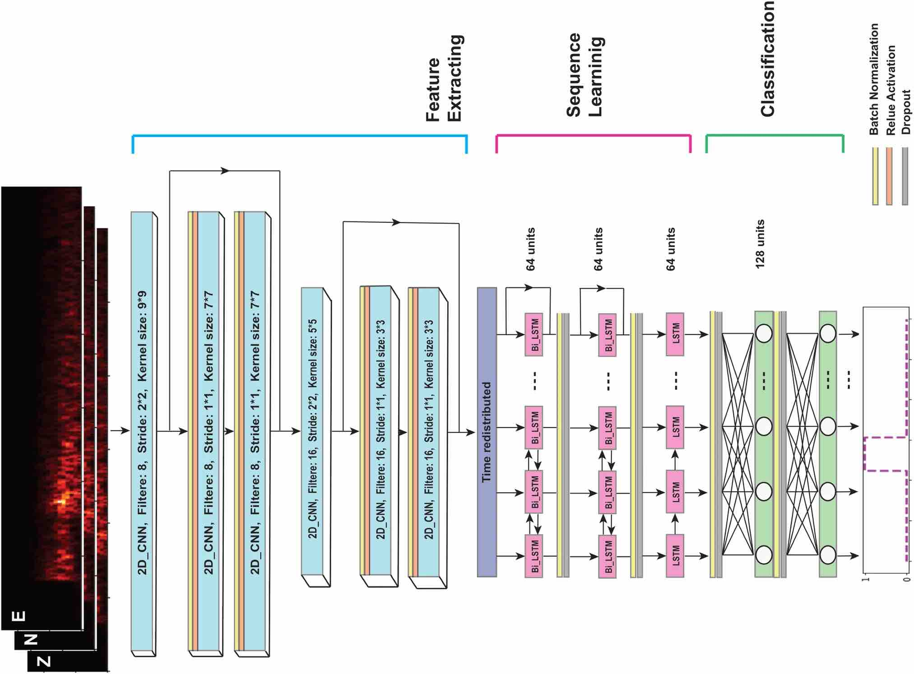

Earthquake Detection
Notebooks: codes/earthquake_detection.ipynb
How to detect earthquakes?
- Amplitude threshold
- STA/LTA
- Template matching / Matched filter
- Deep learning
Amplitude threshold
- PGA (Peak Ground Acceleration)
- PGV (Peak Ground Velocity)
- Displacement
The Modified Mercalli Intensity Scale (MMI)
| Instrumental Intensity | Acceleration (g) | Velocity (cm/s) | Perceived shaking | Potential damage |
|---|---|---|---|---|
| I | < 0.000464 | < 0.0215 | Not felt | None |
| II–III | 0.000464 – 0.00297 | 0.135 – 1.41 | Weak | None |
| IV | 0.00297 – 0.0276 | 1.41 – 4.65 | Light | None |
| V | 0.0276 – 0.115 | 4.65 – 9.64 | Moderate | Very light |
| Instrumental Intensity | Acceleration (g) | Velocity (cm/s) | Perceived shaking | Potential damage |
|---|---|---|---|---|
| VI | 0.115 – 0.215 | 9.64 – 20 | Strong | Light |
| VII | 0.215 – 0.401 | 20 – 41.4 | Very strong | Moderate |
| VIII | 0.401 – 0.747 | 41.4 – 85.8 | Severe | Moderate to heavy |
| IX | 0.747 – 1.39 | 85.8 – 178 | Violent | Heavy |
| X+ | > 1.39 | > 178 | Extreme | Very heavy |
| PGA | Magnitude | Depth | Fatalities | Earthquake |
|---|---|---|---|---|
| 3.23g | 7.8 | 15 km | 2 | 2016 Kaikoura earthquake |
| 2.7g | 9.1 | 30 km | 19,759 | 2011 Tōhoku earthquake |
| 1.92g | 7.7 | 8 km | 2,415 | 1999 Jiji earthquake |
| 1.82g | 6.7 | 18 km | 57 | 1994 Northridge earthquake |
| 1.62g | 7.8 | 10 km | 57,658 | 2023 Turkey–Syria earthquake |
| 0.65 | 6.9 | 19 km | 63 | 1989 Loma Prieta earthquake |
Amplitude threshold
- Pros:
- Simple and fast
- Physical parameter
- Directly related to shaking/damage
- Cons:
- Limit to large earthquakes
- Need backgroud noise level for small earthquakes
- Improvments:
- How to make the threshold adaptive to the background noise level?
STA/LTA
- STA/LTA = Short-Term Average / Long-Term Average

STA/LTA

STA/LTA
-
Pros:
- Simple and fast
- More sensitive than amplitude threshold
- More robust for noisy data
-
Cons:
- More parameters for tuning
- Prone to false detections
Template matching / Matched filter

Review of convolution and cross-correlation in last lecture: cross-correlation
Notebook: cross-correlation
(QTM) Quake Template Matching

Template matching / Matched filter
- Pros:
- Robust to noise
- More sensitive to small earthquakes
- Cons:
- High computational cost
- Need existing catalog to build templates
- Limited to waveform similarity with templates
Similarity search

FAST (Fingerprint And Similarity Thresholding)

Siminlarity search
- Pros:
- Sensitive to small earthquakes
- Computational efficient
- Cons:
- Detect all repeating signals
- Complex to implement
Deep learning
- Generalized similarity search

Convolutional Neural Network for Earthquake detection and location

Residual Network of Convolutional and Recurrent Units for Earthquake Signal Detection

Deep learning
- Pros:
- Robust to noise
- Sensitive to small earthquakes
- Fast prediction
- Cons:
- Need large amount of labeled data
- Black box
- Generalization ability